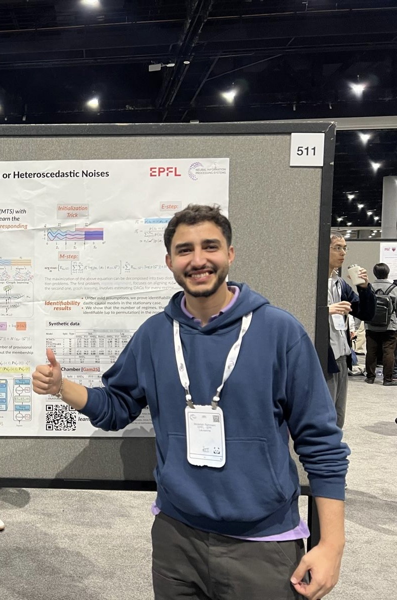

Hi, my name is
Abdellah Rahmani.
I make AI |
I'm a PhD candidate at EPFL advised by Pascal Frossard, and an incoming Student Researcher at Google DeepMind. My work studies how sequence models should structure and allocate their computation — from causal structure learning in time series to dynamic routing and test-time scaling in foundation models.
View my work01.About Me
Hello! I'm Abdellah, a PhD candidate in Electrical Engineering at EPFL, advised by Prof. Pascal Frossard in the Signal Processing Laboratory (LTS4), and an incoming Student Researcher at Google DeepMind in London. My research studies how sequence models should structure and allocate their computation.
My early work — Meta-GNN — personalizes an epileptic-seizure detector to each patient from only a few adaptation steps. Asking where that efficiency comes from led me to structure: through the CASTOR, FANTOM, and Cheesefill frameworks I learn the causal structure underlying multivariate time series, even when the data is non-stationary or has missing values.
More recently, I bring conditional structure to foundation models — building deep recurrent architectures with dynamic routing and test-time scaling, so a model's computation grows with the difficulty of the problem it's reasoning about.
A few topics I work on:
- Causal structure learning
- Time-series modeling
- Dynamic routing & MoE
- Test-time scaling
- Foundation models & LLMs
- Meta-learning
Outside research, I'm a part-time rapper and writer, and I play football, padel, and swim.

- Based in Lausanne, Switzerland
- Incoming @ Google DeepMind
- Languages: Arabic, English, French
02.Publications
Causal Heteroscedastic Structure Learning from Incomplete Temporal Data
Recovers the causal structure of multivariate time series when noise is heteroscedastic and observations are missing — the regime where most structure-learning methods break down.
A Flow-Based Approach for Dynamic Temporal Causal Models with Non-Gaussian or Heteroscedastic Noise
Uses normalizing flows to model dynamic temporal causal relationships under realistic, non-Gaussian and heteroscedastic noise.
Causal Temporal Regime Structure Learning
Jointly discovers distinct temporal regimes and the causal graph governing each, for non-stationary multivariate time series.
A Meta-GNN Approach to Personalized Seizure Detection and Classification
A meta-learned graph neural network that adapts an epileptic-seizure detector to each patient from only a few examples.
SELECTED COMPETITIONS
3rd / 70 — Kaggle Data Challenge, DNA sequence classification with kernel methods (ENS Paris-Saclay, 2021) ·
1st / 10 — Kaggle Data Challenge, hand-gesture recognition (Centrale Lille, 2020). Full list on
Google Scholar.
03.Experience
Student Researcher @ Google DeepMind
Aug 2026 — Dec 2026 · London (incoming)
- Researching in-context and prequential learning for large language models.
Doctoral Researcher @ EPFL (LTS4)
Aug 2022 — Present · Lausanne
- Efficient AI reasoning across modalities, advised by Prof. Pascal Frossard.
- Causal structure learning for non-stationary and incomplete temporal data.
- Dynamic routing and test-time scaling for text and vision models.
Research Scientist Intern @ Deezer Research
Apr 2021 — Sep 2021 · Paris
- Improved podcast recommendations by leveraging users' music-listening patterns.
- Built cross-domain recommendation methods using domain adaptation and meta-learning.
Applied Scientist Intern @ Silex France
Apr 2020 — Sep 2020 · Antibes
- Implemented unsupervised graph representation learning (Metapath2vec) for search.
- Combined graph structure with semantic signals from product descriptions and queries (Neural IR meets graph embedding).
Part-time Researcher @ CRIStAL
Oct 2019 — Mar 2020 · Lille
- Applied domain adaptation to deep models for image-manipulation detection, with Patrick Bas.
Data Science Intern @ Forafric
Apr 2019 — Aug 2019 · Casablanca
- Built crop-identification models from satellite imagery.
04.Education
-
2022 — Present
PhD, Electrical Engineering (AI & Machine Learning)
EPFL, Lausanne -
2020 — 2021
MSc — Mathematics, Vision, Learning (MVA), highest honors
ENS Paris-Saclay -
2019 — 2020
Engineering — AI & Data Science (top 10% of 280)
École Centrale Lille -
2017 — 2019
MEng — Data Science & AI
École Centrale Casablanca -
2014 — 2017
Classes Préparatoires (rank 104 / 3000)
Meknès
05.Honors, Teaching & Service
Awards
- Doc.Mobility Grant — 7,000 CHF, EPFL Doctoral School
- 3rd place — My Thesis in 180 Seconds, EPFL EDEE
- Master's Valorization Scholarship — 10,000 CHF, EPFL LTS4
- Top 10% of 280 students — École Centrale Lille
Service
- Reviewer — NeurIPS, ICASSP
- Evaluator — ELLIS PhD program
Teaching (TA, EPFL)
- Network Machine Learning — Spring '23, '24, '25
- Signal Processing — Fall '25
- Optimization — Fall '23
- Linear Algebra — Fall '22
- Supervised 2 student projects on representation learning from EEG data
06.Blog
No posts yet.
Writing in progress — check back soon.
Get In Touch
I'm always happy to talk about efficient reasoning, causal structure learning, or foundation models — whether it's research, collaboration, or just to connect. My inbox is open.
Say Hello